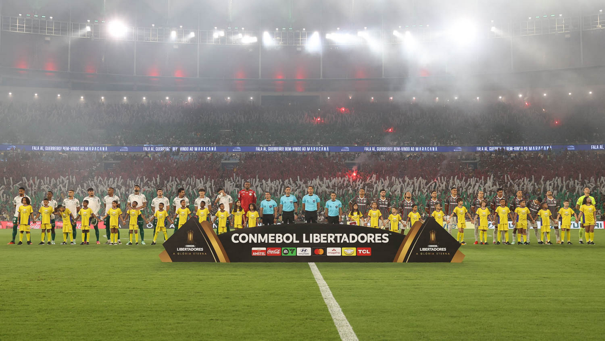

Equipes protagonizam um dos confrontos mais importantes da Copa Libertadores desta temporada. Nesta quarta-feira, 21 de outubro, às 21h30, no Nubank Parque, em São Paulo, os clubes disputam o jogo de volta da semifinal continental, com o Palmeiras em vantagem após vencer a primeira partida por 2 a 1. A partida terá transmissão da TV Globo, ge tv e Paramount+.
O encontro coloca frente a frente duas equipes que conhecem o peso de uma decisão sul-americana. Tricampeão da Libertadores, o Palmeiras procura alcançar sua oitava final e continuar a busca pelo quarto título. O Fluminense, campeão em 2023, tenta chegar à terceira decisão de sua história e manter vivo o sonho do bicampeonato.
A vantagem construída no Rio de Janeiro favorece a equipe paulista, mas o gol marcado pelo Fluminense nos minutos finais da primeira partida mantém a disputa aberta. O Palmeiras pode avançar com um empate, enquanto o Tricolor precisa vencer para seguir na competição.
Como foi o primeiro jogo entre Fluminense e Palmeiras
A semifinal começou em 14 de outubro, no Maracanã, com uma vitória palmeirense por 2 a 1. O resultado foi construído principalmente pela eficiência ofensiva do time paulista, que aproveitou oportunidades mesmo com menor presença no campo de ataque.
Quando a vitória por dois gols de diferença parecia encaminhada, o Fluminense conseguiu diminuir. Aos 47 minutos do segundo tempo, Wesley Natã aproveitou cruzamento de Guga e marcou de cabeça, estabelecendo o placar de 2 a 1.
O gol não evitou a derrota, mas mudou o cenário para a partida decisiva. Sem ele, o Fluminense precisaria vencer por dois gols apenas para levar a disputa aos pênaltis. Com o resultado final, uma vitória simples já é suficiente para forçar as penalidades.
O que cada time precisa para chegar à final
Com o resultado do Maracanã, os cenários de classificação são esses:
- Vitória palmeirense por qualquer placar: Palmeiras classificado.
- Empate por qualquer placar: Palmeiras classificado.
- Vitória do Fluminense por um gol de diferença: decisão nos pênaltis.
- Vitória do Fluminense por dois ou mais gols de diferença: Fluminense classificado.
Não existe vantagem pelo gol marcado fora de casa. Portanto, qualquer vitória tricolor por margem mínima iguala o placar agregado e leva a semifinal diretamente para as cobranças de pênaltis.
Palmeiras aposta no fator casa e na experiência de Abel Ferreira
O Verdão chega à decisão com a experiência de um elenco acostumado a partidas eliminatórias e com uma comissão técnica que construiu uma trajetória importante no futebol sul-americano.
Sob o comando de Abel Ferreira, o clube conquistou a Libertadores em 2020 e 2021, além de alcançar novamente a decisão em 2025. Uma classificação diante do Fluminense representaria a quarta final continental do treinador português pelo Palmeiras.
Abel retorna à área técnica após cumprir suspensão no primeiro jogo da semifinal, quando o auxiliar João Martins comandou a equipe no Maracanã.
O desempenho em casa também aparece como um dos principais argumentos palmeirenses. Antes dessa semifinal, o clube registrava 20 jogos eliminatórios de Libertadores no Nubank Parque, com 15 classificações e cinco eliminações.
Outro dado expressivo é a regularidade continental. O Palmeiras chegou às semifinais da Libertadores pela 13ª vez em sua história, sendo a sexta participação nessa fase nas últimas sete edições.
Fluminense tenta transformar posse de bola em eficiência
Se o Palmeiras chega com a vantagem do resultado, o Tricolor Carioca tem o desafio de encontrar maior eficiência ofensiva diante de uma defesa que conseguiu suportar boa parte da pressão no Maracanã.
No primeiro confronto, a equipe comandada por Marcão apresentou capacidade de manter a posse, construir jogadas e ocupar o campo ofensivo. Entretanto, não conseguiu converter esse domínio em uma quantidade suficiente de gols.
Para reverter o cenário, o Tricolor precisará combinar iniciativa com equilíbrio defensivo. Um gol do Palmeiras obrigaria os cariocas a uma reação ainda maior, aumentando a dificuldade da classificação.
O gol de Wesley Natã no primeiro encontro também mostrou a importância das opções utilizadas durante o jogo. O atacante saiu do banco e marcou o gol que manteve o confronto em aberto.
Os personagens da semifinal
O confronto também reúne histórias individuais que ampliam seu significado.
Flaco López chega como uma das principais referências ofensivas do Palmeiras. Autor do primeiro gol no Maracanã, o argentino acumula 23 gols pelo clube na temporada de 2026, antes da partida decisiva desta noite.
Andreas Pereira também aparece como uma peça importante na construção ofensiva, especialmente pela capacidade de participar da circulação da bola e das jogadas próximas à área adversária.
Outro personagem é Jhon Arias. Campeão da Libertadores pelo Fluminense em 2023, o colombiano agora defende o Palmeiras e reencontra o clube pelo qual participou de uma das maiores conquistas de sua carreira.
Na final de 2023, Arias esteve entre os titulares do Fluminense na vitória por 2 a 1 sobre o Boca Juniors. Três anos depois, participa de uma semifinal continental do lado oposto.
Pelo Fluminense, a experiência de Fábio e Thiago Silva oferece referências importantes em uma partida que exige concentração defensiva. No ataque, Hulk aparece como alternativa para finalizações e jogadas individuais, enquanto Ganso pode contribuir na organização das ações ofensivas.
O histórico do confronto
Embora Palmeiras e Fluminense tenham tradição continental, os encontros entre os clubes na Libertadores são relativamente raros.
Antes da semifinal de 2026, os dois haviam se enfrentado apenas na fase de grupos de 1971. Naquela edição, cada equipe conquistou uma vitória.
O mata-mata de 2026 representa, portanto, o primeiro confronto eliminatório entre Palmeiras e Fluminense na história da Copa Libertadores.
Considerando todas as competições, o retrospecto geral antes do jogo de volta da semifinal aponta vantagem palmeirense. São 126 confrontos, com 66 vitórias do Palmeiras, 40 do Fluminense e 20 empates.
O primeiro encontro registrado entre as equipes aconteceu em 30 de maio de 1926, quando o então Palestra Italia venceu o Fluminense por 3 a 2, no Parque Antarctica, em São Paulo.
A rivalidade atravessou diferentes gerações do futebol brasileiro até chegar a uma semifinal continental que reúne dois clubes campeões da América.
Prováveis escalações
As prévias publicadas no dia da partida apontam a manutenção da base palmeirense e algumas dúvidas na formação tricolor.
Palmeiras — técnico: Abel Ferreira
Carlos Miguel; Murilo, Gustavo Gómez e Alexander Barboza; Giay, Marlon Freitas, Lucas Evangelista, Andreas Pereira e Piquerez; Jhon Arias e Flaco López.
O Palmeiras deve repetir a escalação da vitória por 2 a 1 no Maracanã. Vitor Roque segue em recuperação de uma entorse no tornozelo direito e não participou do último treino tático. Ramón Sosa e Maurício aparecem como alternativas caso Abel Ferreira opte por uma formação mais ofensiva. Jefté também está fora por suspensão preventiva.
Fluminense — técnico: Marcão
Fábio; Guga, Thiago Silva, Millán e Guilherme Arana (Renê); Hércules (Martinelli), Nonato e Paulo Henrique Ganso (Lucho Acosta); Canobbio (Serna), Savarino e Hulk.
O Fluminense apresenta mais indefinições. Martinelli sofreu uma entorse no joelho durante o primeiro confronto e está entre os relacionados, mas sua presença entre os titulares depende da condição física. Hércules é o principal substituto.
As duas formações são projeções e não escalações oficiais. Os titulares definitivos ainda dependem da divulgação das equipes antes da partida.
A arbitragem será de Esteban Ostojich, do Uruguai.
O vencedor do confronto enfrentará Flamengo ou Estudiantes na decisão da Libertadores de 2026.
Uma semifinal que vale mais do que a classificação
Palmeiras e Fluminense chegam ao segundo jogo com objetivos semelhantes, mas necessidades diferentes. O time paulista precisa administrar a vantagem sem permitir que o adversário transforme a posse de bola em oportunidades claras. O clube carioca precisa encontrar o equilíbrio entre buscar o resultado e evitar espaços para os contra-ataques.
O primeiro encontro mostrou dois caminhos distintos. O Palmeiras foi mais eficiente nas chances criadas e conseguiu vencer fora de casa. O Fluminense teve maior controle da bola, mas encontrou dificuldades para superar a estrutura defensiva adversária.
A partida decisiva coloca essas características novamente à prova.
Para o Palmeiras, a classificação representaria mais uma demonstração da força continental construída nas últimas temporadas. Para o Fluminense, uma virada fora de casa acrescentaria outro capítulo relevante à trajetória iniciada com a histórica campanha de 2008 e consagrada pelo título de 2023.
Independentemente do resultado, o confronto reúne tradição, experiência e dois projetos esportivos que chegaram às etapas decisivas da principal competição de clubes da América do Sul. Mais do que uma semifinal brasileira, Palmeiras x Fluminense representa a disputa entre duas histórias recentes de sucesso continental e o direito de continuar lutando pela Libertadores de 2026.